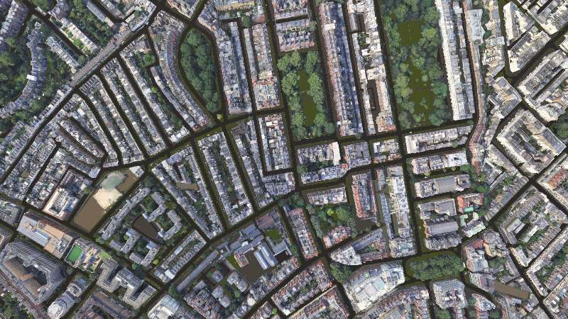
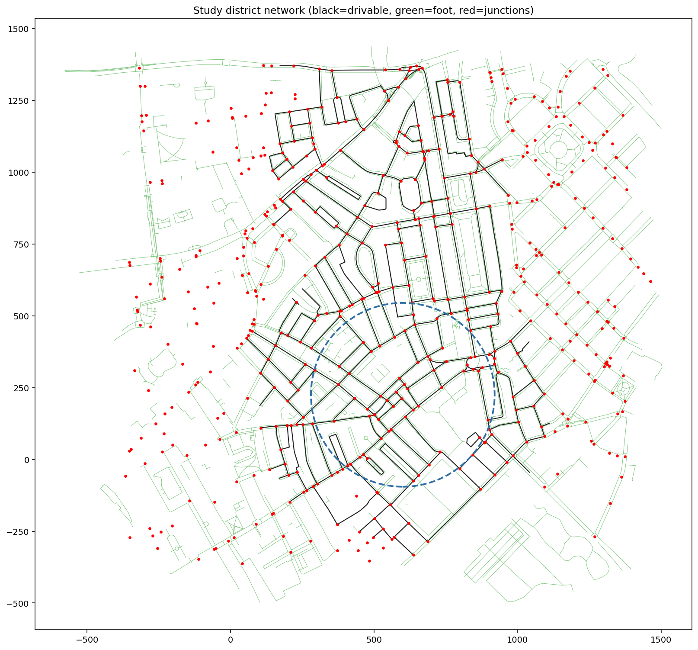
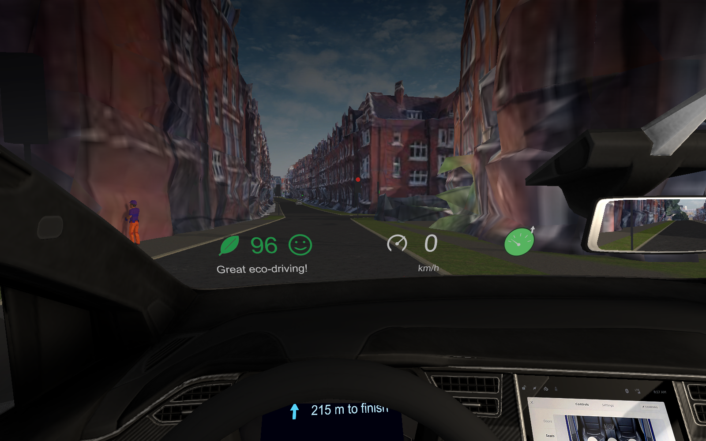
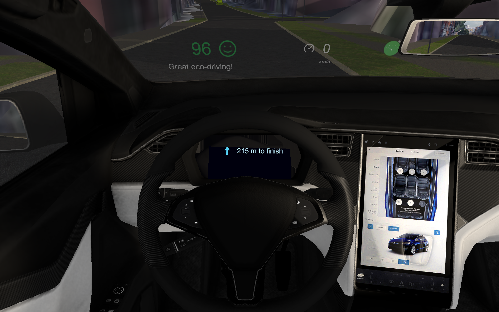
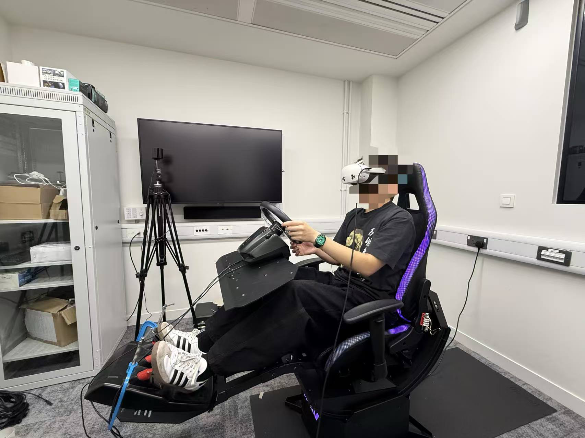
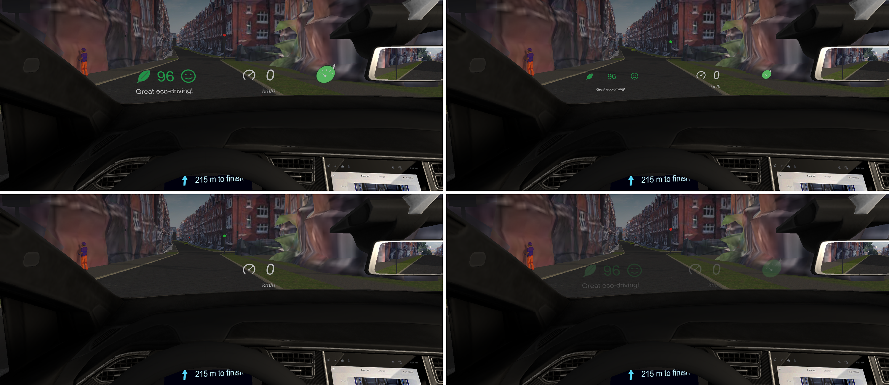
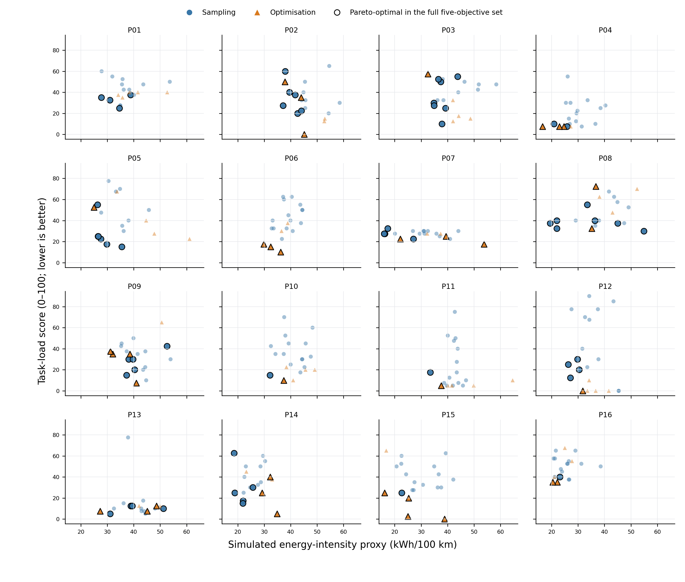

The platform
I built the experimental environment in Unity: a VR driving simulator that combines Google Photorealistic 3D Tiles (via Cesium) with a drivable road network generated from OpenStreetMap — 418 road segments, 28.7 km, 564 junctions around central London. A road-load energy model (rolling and aerodynamic resistance, EV regeneration) produces real-time eco-scores, and the display being optimised is a head-up interface with seven continuous parameters: the sizes of six element types and the overall opacity.





The method
Sixteen participants each drove 21 short urban rounds: 15 space-filling Sobol sampling rounds, five rounds proposed by a multi-objective Bayesian optimiser, and a final round repeating the recommended configuration. The objectives were a simulated energy-intensity proxy, task load (NASA-TLX), and acceptance (van der Laan). The experiment loop — round control, questionnaires, optimiser bridge, statistical analysis in R — was fully automated.

What came out
All sixteen recommended configurations came from the driver’s own Pareto front. Against a same-route sampling reference, they improved task load, informativeness, pleasantness and legibility by 15.8, 19.8, 16.6 and 18.2 points respectively, with no significant change in the energy proxy. The chosen configurations differed markedly between drivers: the leaf gauge survived in eleven of sixteen, the numerical score in only five, and one driver kept nothing but the speedometer and the guidance arrow. The seven parameters varied between participants by 1.3 to 1.9 times their variation within the optimisation rounds, and Pareto designs clustered by participant.

The main limitation is the absence of a non-adaptive baseline: the reference throughout is the participant's own sampling rounds on the same route, and no fixed default display of the kind a manufacturer might deploy was included. Each participant also went through the study in a single sitting. The results therefore cannot establish that personalisation outperforms a well-designed fixed display, or that energy use would decrease in a real vehicle.